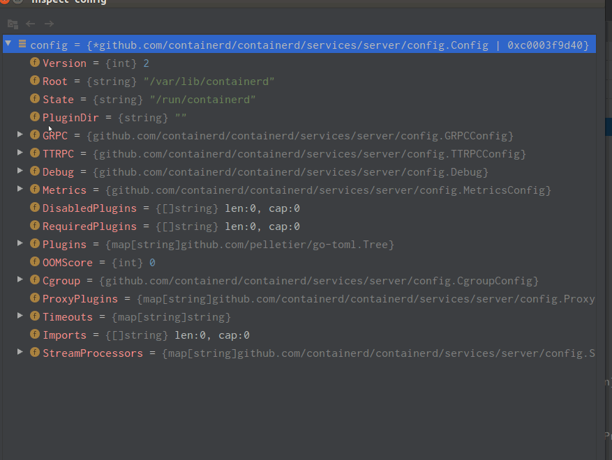

<!DOCTYPE html>


  


<html class="theme-next mist use-motion" lang="zh-Hans">
<head>
  <meta charset="UTF-8"/>
<meta http-equiv="X-UA-Compatible" content="IE=edge" />
<meta name="viewport" content="width=device-width, initial-scale=1, maximum-scale=1"/>
<meta name="theme-color" content="#222">


<meta http-equiv="Cache-Control" content="no-transform" />
<meta http-equiv="Cache-Control" content="no-siteapp" />


  
  
  <link href="/lib/fancybox/source/jquery.fancybox.css?v=2.1.5" rel="stylesheet" type="text/css" />


<link href="/lib/font-awesome/css/font-awesome.min.css?v=4.6.2" rel="stylesheet" type="text/css" />

<link href="/css/main.css?v=5.1.4" rel="stylesheet" type="text/css" />


  <link rel="icon" type="image/png" sizes="32x32" href="/images/favicon.jpg?v=5.1.4">


  <link rel="icon" type="image/png" sizes="16x16" href="/images/favicon.jpg?v=5.1.4">


  <meta name="keywords" content="Kubernetes,Runc," />


<meta name="description" content="前言 众所周知kubernetes一套强大的服务编排工具，能够管理数以千计的服务节点及容器；虽然我们可以通过操控kubernetes去控制容器的创建、启动、停止，但实际上容器的创建、销毁等操作并非由kubernetes直接执行，而是通过接口调用各种runtime去实现 一般来说kubernetes可以对接docker、containerd等各种容器管理工具，称呼其为runtime是一种笼统的叫法，">
<meta property="og:type" content="article">
<meta property="og:title" content="Kubernetes runtime">
<meta property="og:url" content="https://antmoveh.github.io/2021/10/28/Kubernetes%20runtime/index.html">
<meta property="og:site_name" content="蚂蚁搬家H">
<meta property="og:description" content="前言 众所周知kubernetes一套强大的服务编排工具，能够管理数以千计的服务节点及容器；虽然我们可以通过操控kubernetes去控制容器的创建、启动、停止，但实际上容器的创建、销毁等操作并非由kubernetes直接执行，而是通过接口调用各种runtime去实现 一般来说kubernetes可以对接docker、containerd等各种容器管理工具，称呼其为runtime是一种笼统的叫法，">
<meta property="og:locale">
<meta property="og:image" content="https://antmoveh.github.io/2021/10/28/Kubernetes%20runtime/containerd.gif">
<meta property="article:published_time" content="2021-10-28T09:44:24.152Z">
<meta property="article:modified_time" content="2021-10-28T09:46:24.635Z">
<meta property="article:author" content="antmoveh">
<meta property="article:tag" content="Kubernetes">
<meta property="article:tag" content="Runc">
<meta name="twitter:card" content="summary">
<meta name="twitter:image" content="https://antmoveh.github.io/2021/10/28/Kubernetes%20runtime/containerd.gif">


<script type="text/javascript" id="hexo.configurations">
  var NexT = window.NexT || {};
  var CONFIG = {
    root: '',
    scheme: 'Mist',
    version: '5.1.4',
    sidebar: {"position":"left","display":"post","offset":12,"b2t":false,"scrollpercent":true,"onmobile":false},
    fancybox: true,
    tabs: true,
    motion: {"enable":true,"async":false,"transition":{"post_block":"fadeIn","post_header":"slideDownIn","post_body":"slideDownIn","coll_header":"slideLeftIn","sidebar":"slideUpIn"}},
    duoshuo: {
      userId: '0',
      author: '博主'
    },
    algolia: {
      applicationID: '',
      apiKey: '',
      indexName: '',
      hits: {"per_page":10},
      labels: {"input_placeholder":"Search for Posts","hits_empty":"We didn't find any results for the search: ${query}","hits_stats":"${hits} results found in ${time} ms"}
    }
  };
  
  (function(){
	if(''){
		if (prompt('请输入文章密码') !== ''){
			alert('密码错误！');
			history.back();
		}
	}
})();
  
</script>


  <link rel="canonical" href="https://antmoveh.github.io/2021/10/28/Kubernetes runtime/"/>


  <title>Kubernetes runtime | 蚂蚁搬家H</title>
  


<meta name="generator" content="Hexo 5.3.0"></head>

<body itemscope itemtype="http://schema.org/WebPage" lang="zh-Hans">

  
  
    
  

  <div class="container sidebar-position-left page-post-detail">
    <div class="headband"></div>

    <header id="header" class="header" itemscope itemtype="http://schema.org/WPHeader">
      <div class="header-inner"><div class="site-brand-wrapper">
  <div class="site-meta ">
    

    <div class="custom-logo-site-title">
      <a href="/"  class="brand" rel="start">
        <span class="logo-line-before"><i></i></span>
        <span class="site-title">蚂蚁搬家H</span>
        <span class="logo-line-after"><i></i></span>
      </a>
    </div>
      
        <p class="site-subtitle">搬哪去</p>
      
  </div>

  <div class="site-nav-toggle">
    <button>
      <span class="btn-bar"></span>
      <span class="btn-bar"></span>
      <span class="btn-bar"></span>
    </button>
  </div>
</div>

<nav class="site-nav">
  

  
    <ul id="menu" class="menu">
      
        
        <li class="menu-item menu-item-home">
          <a href="/" rel="section">
            
              <i class="menu-item-icon fa fa-fw fa-home"></i> <br />
            
            首页
          </a>
        </li>
      
        
        <li class="menu-item menu-item-categories">
          <a href="/categories" rel="section">
            
              <i class="menu-item-icon fa fa-fw fa-th"></i> <br />
            
            分类
          </a>
        </li>
      
        
        <li class="menu-item menu-item-archives">
          <a href="/archives" rel="section">
            
              <i class="menu-item-icon fa fa-fw fa-archive"></i> <br />
            
            归档
          </a>
        </li>
      

      
        <li class="menu-item menu-item-search">
          
            <a href="javascript:;" class="popup-trigger">
          
            
              <i class="menu-item-icon fa fa-search fa-fw"></i> <br />
            
            搜索
          </a>
        </li>
      
    </ul>
  

  
    <div class="site-search">
      
  <div class="popup search-popup local-search-popup">
  <div class="local-search-header clearfix">
    <span class="search-icon">
      <i class="fa fa-search"></i>
    </span>
    <span class="popup-btn-close">
      <i class="fa fa-times-circle"></i>
    </span>
    <div class="local-search-input-wrapper">
      <input autocomplete="off"
             placeholder="搜索..." spellcheck="false"
             type="text" id="local-search-input">
    </div>
  </div>
  <div id="local-search-result"></div>
</div>


    </div>
  
</nav>


 </div>
    </header>

    <main id="main" class="main">
      <div class="main-inner">
        <div class="content-wrap">
          <div id="content" class="content">
            

  <div id="posts" class="posts-expand">
    

  

  
  
  

  <article class="post post-type-normal" itemscope itemtype="http://schema.org/Article">
  
  
  
  <div class="post-block">
    <link itemprop="mainEntityOfPage" href="https://antmoveh.github.io/2021/10/28/Kubernetes%20runtime/">

    <span hidden itemprop="author" itemscope itemtype="http://schema.org/Person">
      <meta itemprop="name" content="">
      <meta itemprop="description" content="">
      <meta itemprop="image" content="/images/avatar.gif">
    </span>

    <span hidden itemprop="publisher" itemscope itemtype="http://schema.org/Organization">
      <meta itemprop="name" content="蚂蚁搬家H">
    </span>

    
      <header class="post-header">

        
        
          <h1 class="post-title" itemprop="name headline">Kubernetes runtime</h1>
        

        <div class="post-meta">
          <span class="post-time">
            
              <span class="post-meta-item-icon">
                <i class="fa fa-calendar-o"></i>
              </span>
              
                <span class="post-meta-item-text">发表于</span>
              
              <time title="创建于" itemprop="dateCreated datePublished" datetime="2021-10-28T17:44:24+08:00">
                2021-10-28
              </time>
            

            

            
          </span>

          
            <span class="post-category" >
            
              <span class="post-meta-divider">|</span>
            
              <span class="post-meta-item-icon">
                <i class="fa fa-folder-o"></i>
              </span>
              
                <span class="post-meta-item-text">分类于</span>
              
              
                <span itemprop="about" itemscope itemtype="http://schema.org/Thing">
                  <a href="/categories/Kubernetes/" itemprop="url" rel="index">
                    <span itemprop="name">Kubernetes</span>
                  </a>
                </span>

                
                
              
            </span>
          

          
            
          

          
          

          
            <span class="post-meta-divider">|</span>
            <span class="page-pv"><i class="fa fa-file-o"></i> 阅读数
            <span class="busuanzi-value" id="busuanzi_value_page_pv" ></span>
            </span>
          

          
            <div class="post-wordcount">
              
                
                <span class="post-meta-item-icon">
                  <i class="fa fa-file-word-o"></i>
                </span>
                
                  <span class="post-meta-item-text">字数统计&#58;</span>
                
                <span title="字数统计">
                  2.5k
                </span>
              

              
                <span class="post-meta-divider">|</span>
              

              
                <span class="post-meta-item-icon">
                  <i class="fa fa-clock-o"></i>
                </span>
                
                  <span class="post-meta-item-text">阅读时长 &asymp;</span>
                
                <span title="阅读时长">
                  11
                </span>
              
            </div>
          

          

        </div>
      </header>
    

    
    
    
    <div class="post-body" itemprop="articleBody">

      
      

      
        <h4 id="前言"><a href="#前言" class="headerlink" title="前言"></a>前言</h4><ul>
<li>众所周知kubernetes一套强大的服务编排工具，能够管理数以千计的服务节点及容器；虽然我们可以通过操控kubernetes去控制容器的创建、启动、停止，但实际上容器的创建、销毁等操作并非由kubernetes直接执行，而是通过接口调用各种runtime去实现</li>
<li>一般来说kubernetes可以对接docker、containerd等各种容器管理工具，称呼其为runtime是一种笼统的叫法，因为它们包含众多组件，更准确的runtime为直接操作服务器创建销毁容器的组件如runc、kata、gvisor等</li>
<li>该篇文章主要目的是为了研究一下kubernetes支持多runtime，顺便解析各个组件之间是如何协调配合从而实现使用指定的runtime来运行容器</li>
</ul>
<h4 id="目标"><a href="#目标" class="headerlink" title="目标"></a>目标</h4><ul>
<li>kubernetes集群，使用containerd管理容器的前提下，如何配置容器选择多runtime</li>
</ul>
<h4 id="结论"><a href="#结论" class="headerlink" title="结论"></a>结论</h4><blockquote>
<ul>
<li>这里笔者先给出结论，如果不关心流程细节知道结论就好了</li>
</ul>
</blockquote>
<ul>
<li>创建runtimeclass资源 <code>kubectl apply -f runtimeclass.yaml</code></li>
</ul>
<figure class="highlight yaml"><table><tr><td class="gutter"><pre><span class="line">1</span><br><span class="line">2</span><br><span class="line">3</span><br><span class="line">4</span><br><span class="line">5</span><br><span class="line">6</span><br><span class="line">7</span><br><span class="line">8</span><br><span class="line">9</span><br><span class="line">10</span><br></pre></td><td class="code"><pre><span class="line"><span class="attr">apiVersion:</span> <span class="string">node.k8s.io/v1</span>  </span><br><span class="line"><span class="attr">kind:</span> <span class="string">RuntimeClass</span></span><br><span class="line"><span class="attr">metadata:</span></span><br><span class="line">  <span class="attr">name:</span> <span class="string">myclass</span> <span class="comment"># 集群级别的没有namespace</span></span><br><span class="line"><span class="attr">handler:</span> <span class="string">myrunc</span></span><br><span class="line"><span class="attr">scheduling:</span></span><br><span class="line">  <span class="attr">nodeSelector:</span></span><br><span class="line">    <span class="attr">kubernetes.io/hostname:</span> <span class="number">192.168</span><span class="number">.56</span><span class="number">.121</span></span><br><span class="line"><span class="comment"># 注意这里使用了nodeSelector，kubernetes无法知道节点有哪些runtime，所以需要用户自己为特殊节点打上标签，可以通过节点选择器调度到指定节点    </span></span><br><span class="line">    </span><br></pre></td></tr></table></figure>
<ul>
<li>创建测试Pod <code>kubectl apply -f pod.yaml</code></li>
</ul>
<figure class="highlight yaml"><table><tr><td class="gutter"><pre><span class="line">1</span><br><span class="line">2</span><br><span class="line">3</span><br><span class="line">4</span><br><span class="line">5</span><br><span class="line">6</span><br><span class="line">7</span><br><span class="line">8</span><br><span class="line">9</span><br></pre></td><td class="code"><pre><span class="line"><span class="attr">apiVersion:</span> <span class="string">v1</span></span><br><span class="line"><span class="attr">kind:</span> <span class="string">Pod</span></span><br><span class="line"><span class="attr">metadata:</span></span><br><span class="line">  <span class="attr">name:</span> <span class="string">example</span></span><br><span class="line"><span class="attr">spec:</span></span><br><span class="line">  <span class="attr">runtimeClassName:</span> <span class="string">myclass</span> <span class="comment"># 指定runtimeclass name</span></span><br><span class="line">  <span class="attr">containers:</span></span><br><span class="line">    <span class="bullet">-</span> <span class="attr">name:</span> <span class="string">nginx</span></span><br><span class="line">      <span class="attr">image:</span> <span class="string">nginx:latest</span></span><br></pre></td></tr></table></figure>
<ul>
<li>配置containerd配置文件<code>config.toml</code></li>
</ul>
<figure class="highlight toml"><table><tr><td class="gutter"><pre><span class="line">1</span><br><span class="line">2</span><br><span class="line">3</span><br><span class="line">4</span><br><span class="line">5</span><br><span class="line">6</span><br><span class="line">7</span><br><span class="line">8</span><br><span class="line">9</span><br><span class="line">10</span><br><span class="line">11</span><br><span class="line">12</span><br><span class="line">13</span><br><span class="line">14</span><br><span class="line">15</span><br><span class="line">16</span><br><span class="line">17</span><br><span class="line">18</span><br><span class="line">19</span><br><span class="line">20</span><br><span class="line">21</span><br><span class="line">22</span><br><span class="line">23</span><br><span class="line">24</span><br><span class="line">25</span><br><span class="line">26</span><br><span class="line">27</span><br><span class="line">28</span><br><span class="line">29</span><br><span class="line">30</span><br><span class="line">31</span><br></pre></td><td class="code"><pre><span class="line"><span class="section">[plugins.&quot;io.containerd.grpc.v1.cri&quot;.containerd.runtimes]</span></span><br><span class="line"></span><br><span class="line">  <span class="section">[plugins.&quot;io.containerd.grpc.v1.cri&quot;.containerd.runtimes.runc]</span></span><br><span class="line">    <span class="attr">base_runtime_spec</span> = <span class="string">&quot;&quot;</span></span><br><span class="line">    <span class="attr">container_annotations</span> = []</span><br><span class="line">    <span class="attr">pod_annotations</span> = []</span><br><span class="line">    <span class="attr">privileged_without_host_devices</span> = <span class="literal">false</span></span><br><span class="line">    <span class="attr">runtime_engine</span> = <span class="string">&quot;&quot;</span></span><br><span class="line">    <span class="attr">runtime_root</span> = <span class="string">&quot;&quot;</span></span><br><span class="line">    <span class="attr">runtime_type</span> = <span class="string">&quot;io.containerd.runc.v2&quot;</span></span><br><span class="line"></span><br><span class="line">    <span class="section">[plugins.&quot;io.containerd.grpc.v1.cri&quot;.containerd.runtimes.runc.options]</span></span><br><span class="line">      <span class="attr">BinaryName</span> = <span class="string">&quot;&quot;</span></span><br><span class="line">      <span class="attr">CriuImagePath</span> = <span class="string">&quot;&quot;</span></span><br><span class="line">      <span class="attr">CriuPath</span> = <span class="string">&quot;&quot;</span></span><br><span class="line">      <span class="attr">CriuWorkPath</span> = <span class="string">&quot;&quot;</span></span><br><span class="line">      <span class="attr">IoGid</span> = <span class="number">0</span></span><br><span class="line">      <span class="attr">IoUid</span> = <span class="number">0</span></span><br><span class="line">      <span class="attr">NoNewKeyring</span> = <span class="literal">false</span></span><br><span class="line">      <span class="attr">NoPivotRoot</span> = <span class="literal">false</span></span><br><span class="line">      <span class="attr">Root</span> = <span class="string">&quot;&quot;</span></span><br><span class="line">      <span class="attr">ShimCgroup</span> = <span class="string">&quot;&quot;</span></span><br><span class="line">      <span class="attr">SystemdCgroup</span> = <span class="literal">false</span></span><br><span class="line">  <span class="comment"># 这里是新加的myrunc运行时    </span></span><br><span class="line">  <span class="section">[plugins.&quot;io.containerd.grpc.v1.cri&quot;.containerd.runtimes.myrunc]</span></span><br><span class="line">    <span class="comment"># runtime_type就是这个不要改成别的</span></span><br><span class="line">    <span class="attr">runtime_type</span> = <span class="string">&quot;io.containerd.runc.v2&quot;</span></span><br><span class="line"></span><br><span class="line">    <span class="section">[plugins.&quot;io.containerd.grpc.v1.cri&quot;.containerd.runtimes.myrunc.options]</span></span><br><span class="line">      <span class="comment"># 这个就是二进制的runtime名称，可以复制一个runc名称叫myrunc，myrunc所在目录要在$PATH中</span></span><br><span class="line">      <span class="attr">BinaryName</span> = <span class="string">&quot;myrunc&quot;</span></span><br></pre></td></tr></table></figure>
<ul>
<li>验证一下该容器是否使用myrunc</li>
</ul>
<figure class="highlight shell"><table><tr><td class="gutter"><pre><span class="line">1</span><br><span class="line">2</span><br><span class="line">3</span><br><span class="line">4</span><br><span class="line">5</span><br><span class="line">6</span><br><span class="line">7</span><br><span class="line">8</span><br><span class="line">9</span><br><span class="line">10</span><br><span class="line">11</span><br><span class="line">12</span><br><span class="line">13</span><br><span class="line">14</span><br><span class="line">15</span><br><span class="line">16</span><br><span class="line">17</span><br><span class="line">18</span><br><span class="line">19</span><br><span class="line">20</span><br><span class="line">21</span><br><span class="line">22</span><br><span class="line">23</span><br><span class="line">24</span><br><span class="line">25</span><br></pre></td><td class="code"><pre><span class="line"><span class="meta">#</span><span class="bash"> 第一种方法是借助nerdctl工具，其Runtime可以看出用的哪个runtime</span></span><br><span class="line">[root@192 k8s.io]# nerdctl -n k8s.io ps</span><br><span class="line">CONTAINER ID    IMAGE                             COMMAND                   CREATED          STATUS    PORTS    NAMES</span><br><span class="line">03e63e5bef98    docker.io/library/nginx:latest    &quot;/docker-entrypoint.…&quot;    2 minutes ago    Up                                </span><br><span class="line">aecd9b49142a    k8s.gcr.io/pause:3.5              &quot;/pause&quot;                  2 minutes ago    Up                                 </span><br><span class="line">[root@192 k8s.io]# nerdctl -n k8s.io inspect --mode=native 03e63e5bef98 | grep -A 5 Runtime</span><br><span class="line">        &quot;Runtime&quot;: &#123;</span><br><span class="line">            &quot;Name&quot;: &quot;io.containerd.runc.v2&quot;,</span><br><span class="line">            &quot;Options&quot;: &#123;</span><br><span class="line">                &quot;type_url&quot;: &quot;containerd.runc.v1.Options&quot;,</span><br><span class="line">                &quot;value&quot;: &quot;MgZteXJ1bmM=&quot;</span><br><span class="line">            &#125;</span><br><span class="line">[root@192 k8s.io]# echo MgZteXJ1bmM= | base64 -d</span><br><span class="line">2myrunc</span><br><span class="line"></span><br><span class="line"><span class="meta">#</span><span class="bash"> 第二种方法是直接进入容器目录，查看其options.json内容</span></span><br><span class="line">[root@192 k8s.io]# pwd</span><br><span class="line">/run/containerd/io.containerd.runtime.v2.task/k8s.io</span><br><span class="line">[root@192 k8s.io]# cd 03e63e5bef98347907a061498c6aa9d653077ad554f8eebdaad34cdcef9cbd65/</span><br><span class="line">[root@192 03e63e5bef98347907a061498c6aa9d653077ad554f8eebdaad34cdcef9cbd65]# ls</span><br><span class="line">address  config.json  init.pid  log  log.json  options.json  rootfs  runtime  work</span><br><span class="line">[root@192 03e63e5bef98347907a061498c6aa9d653077ad554f8eebdaad34cdcef9cbd65]# cat options.json </span><br><span class="line">&#123;&quot;binary_name&quot;:&quot;myrunc&quot;&#125;</span><br><span class="line"></span><br><span class="line"><span class="meta">#</span><span class="bash"> containerd并没有类似docker info可以直接观察到runc版本的方法，因为在容器创建之前并不知道会使用哪个runtime，只能在containerd配置文件中看到配置了哪些runtime</span> </span><br></pre></td></tr></table></figure>
<ul>
<li>如何直接启动容器指定runtime</li>
</ul>
<figure class="highlight shell"><table><tr><td class="gutter"><pre><span class="line">1</span><br></pre></td><td class="code"><pre><span class="line"><span class="meta">$</span><span class="bash"> nerdctl run --runtime myrunc nginx</span></span><br></pre></td></tr></table></figure>


<ul>
<li>注意事项<ul>
<li>containerd的config.toml中的myrunc是必须配置的，containerd通过myrunc名字去查询其配置，并且更改其配置需重启containerd才会生效</li>
<li>myrunc二进制文件要在$PATH存在，若是不存在创建容器时会报找不到可执行文件</li>
<li>config.toml是一种小众的配置文件格式，下边会简单展示一下它的加载后效果</li>
</ul>
</li>
</ul>
<h4 id="工作流程梳理"><a href="#工作流程梳理" class="headerlink" title="工作流程梳理"></a>工作流程梳理</h4><blockquote>
<ul>
<li>该篇文章并不会进行详细的代码分析，涉及代码地方会进行简要列举，如要详细了解请自行查看源码</li>
</ul>
</blockquote>
<ul>
<li>首先我们创建了<code>runtimeclass</code>以及<code>Pod</code>，kubelet负责容器创建，在此我们直接贴一下代码，看到runtime被传到containerd就行了</li>
</ul>
<figure class="highlight golang"><table><tr><td class="gutter"><pre><span class="line">1</span><br><span class="line">2</span><br><span class="line">3</span><br><span class="line">4</span><br><span class="line">5</span><br><span class="line">6</span><br><span class="line">7</span><br><span class="line">8</span><br><span class="line">9</span><br><span class="line">10</span><br><span class="line">11</span><br><span class="line">12</span><br><span class="line">13</span><br><span class="line">14</span><br><span class="line">15</span><br><span class="line">16</span><br><span class="line">17</span><br><span class="line">18</span><br><span class="line">19</span><br></pre></td><td class="code"><pre><span class="line"><span class="comment">// kubernetes/pkg/kubelet/cri/remote/remote)_runtime.go:101</span></span><br><span class="line"><span class="comment">// RunPodSandbox creates and starts a pod-level sandbox. Runtimes should ensure</span></span><br><span class="line"><span class="comment">// the sandbox is in ready state.</span></span><br><span class="line"><span class="function"><span class="keyword">func</span> <span class="params">(r *remoteRuntimeService)</span> <span class="title">RunPodSandbox</span><span class="params">(config *runtimeapi.PodSandboxConfig, runtimeHandler <span class="keyword">string</span>)</span> <span class="params">(<span class="keyword">string</span>, error)</span></span> &#123;</span><br><span class="line">    ...</span><br><span class="line">	ctx, cancel := getContextWithTimeout(timeout)</span><br><span class="line">	<span class="keyword">defer</span> cancel()</span><br><span class="line"></span><br><span class="line">	resp, err := r.runtimeClient.RunPodSandbox(ctx, &amp;runtimeapi.RunPodSandboxRequest&#123;</span><br><span class="line">		Config:         config,</span><br><span class="line">		RuntimeHandler: runtimeHandler, <span class="comment">// 这是个字符串，可以认为这个值就是myrunc</span></span><br><span class="line">	&#125;)</span><br><span class="line">	<span class="keyword">if</span> err != <span class="literal">nil</span> &#123;</span><br><span class="line">		klog.ErrorS(err, <span class="string">&quot;RunPodSandbox from runtime service failed&quot;</span>)</span><br><span class="line">		<span class="keyword">return</span> <span class="string">&quot;&quot;</span>, err</span><br><span class="line">	&#125;</span><br><span class="line">    ....</span><br><span class="line">	<span class="keyword">return</span> resp.PodSandboxId, <span class="literal">nil</span></span><br><span class="line">&#125;</span><br></pre></td></tr></table></figure>


<ul>
<li>containerd 号称内置了cri，也就是实现了cri的server端，自然请求直接发送到了containerd</li>
<li>工作流程图总览</li>
</ul>
<figure class="highlight plain"><table><tr><td class="gutter"><pre><span class="line">1</span><br><span class="line">2</span><br><span class="line">3</span><br><span class="line">4</span><br><span class="line">5</span><br><span class="line">6</span><br><span class="line">7</span><br><span class="line">8</span><br><span class="line">9</span><br><span class="line">10</span><br><span class="line">11</span><br><span class="line">12</span><br><span class="line">13</span><br><span class="line">14</span><br><span class="line">15</span><br><span class="line">16</span><br><span class="line">17</span><br><span class="line">18</span><br><span class="line">19</span><br><span class="line">20</span><br><span class="line">21</span><br><span class="line">22</span><br><span class="line">23</span><br><span class="line">24</span><br><span class="line">25</span><br><span class="line">26</span><br></pre></td><td class="code"><pre><span class="line">title: 工作流程</span><br><span class="line">participant kubelet as kubelet</span><br><span class="line">participant containerd as containerd</span><br><span class="line">participant containerdshim as shim</span><br><span class="line">participant runc as runc</span><br><span class="line">participant myrunc as myrunc</span><br><span class="line">Note over kubelet: 创建POD</span><br><span class="line">kubelet-&gt;containerd: cri调用containerd创建容器</span><br><span class="line">Note over containerd: 接收容器创建请求</span><br><span class="line">Note over containerd: 检查请求参数配置，runtime是否在config.toml中存在</span><br><span class="line">containerd-&gt;shim: 启动containerd-shmi-run-v2进程</span><br><span class="line">Note over shim: 调用自身，将自身进程父进程变成1号进程</span><br><span class="line">Note over shim: 启动ttrpc服务</span><br><span class="line">shim-&gt;containerd: 返回ttrpc的socket文件address</span><br><span class="line">Note over containerd: 启动ttrpcclient与containerdshim建立连接</span><br><span class="line">containerd-&gt;shim: 发送容器启动命令</span><br><span class="line">Note over shim: 根据容器配置选择runtime</span><br><span class="line">shim--&gt;runc: 默认runc</span><br><span class="line">shim-&gt;myrunc: 根据指定选择myrunc</span><br><span class="line">Note over shim: 调用myrunc进行容器创建</span><br><span class="line">shim-&gt;myrunc: 执行runc create</span><br><span class="line">myrunc--&gt;myrunc: 会停留在runc init进程</span><br><span class="line">shim-&gt;myrunc: 执行runc exec nginx -s daemon;</span><br><span class="line">shim--&gt;containerd: 启动完成</span><br><span class="line">containerd--&gt;kubelet: 启动完成</span><br><span class="line"></span><br></pre></td></tr></table></figure>
<ul>
<li>可以观察到containerd要调用contaienrd-shim-runc-v2，然后由它去调用runc，此时就产生了一个疑问，containerd是如何查找到这个shim文件的</li>
</ul>
<figure class="highlight go"><table><tr><td class="gutter"><pre><span class="line">1</span><br><span class="line">2</span><br><span class="line">3</span><br><span class="line">4</span><br><span class="line">5</span><br><span class="line">6</span><br><span class="line">7</span><br><span class="line">8</span><br><span class="line">9</span><br><span class="line">10</span><br><span class="line">11</span><br><span class="line">12</span><br></pre></td><td class="code"><pre><span class="line"><span class="comment">// containerd/runtime/v2/shim/util.go:121</span></span><br><span class="line"><span class="function"><span class="keyword">func</span> <span class="title">BinaryName</span><span class="params">(runtime <span class="keyword">string</span>)</span> <span class="title">string</span></span> &#123;</span><br><span class="line">	<span class="comment">// runtime name should format like $prefix.name.version</span></span><br><span class="line">	parts := strings.Split(runtime, <span class="string">&quot;.&quot;</span>)</span><br><span class="line">	<span class="keyword">if</span> <span class="built_in">len</span>(parts) &lt; <span class="number">2</span> &#123;</span><br><span class="line">		<span class="keyword">return</span> <span class="string">&quot;&quot;</span></span><br><span class="line">	&#125;</span><br><span class="line">   <span class="comment">// runtime: io.containerd.runc.v2</span></span><br><span class="line">   <span class="comment">// shimBinaryFormat=&quot;containerd-shim-%s-%s&quot;</span></span><br><span class="line">	<span class="keyword">return</span> fmt.Sprintf(shimBinaryFormat, parts[<span class="built_in">len</span>(parts)<span class="number">-2</span>], parts[<span class="built_in">len</span>(parts)<span class="number">-1</span>])</span><br><span class="line">&#125;</span><br><span class="line"><span class="comment">// 实际上containerd是通过这个方法获取containerd-shim-run-v2这个二进制名称的，这个runtime是从配置文件的runtime_type，所以说对于runc来说它只能是io.containerd.runc.v2,不然就找不到他的container-shim了</span></span><br></pre></td></tr></table></figure>
<ul>
<li>看到这个时候其实产生了一个疑惑，如果是kata呢，难道kata也用<code>containerd-shim-run-v2</code>管理？随google了一下然后就发现了<code>https://github.com/kata-containers/runtime/tree/master/containerd-shim-v2</code>这个项目。果然kata有它自己的<code>containerd-shim-kata-v2</code></li>
</ul>
<h4 id="附录"><a href="#附录" class="headerlink" title="附录"></a>附录</h4><ul>
<li>containerd项目简介</li>
</ul>
<figure class="highlight shell"><table><tr><td class="gutter"><pre><span class="line">1</span><br><span class="line">2</span><br><span class="line">3</span><br><span class="line">4</span><br><span class="line">5</span><br><span class="line">6</span><br><span class="line">7</span><br><span class="line">8</span><br><span class="line">9</span><br><span class="line">10</span><br><span class="line">11</span><br><span class="line">12</span><br><span class="line">13</span><br><span class="line">14</span><br><span class="line">15</span><br><span class="line">16</span><br><span class="line">17</span><br><span class="line">18</span><br><span class="line">19</span><br><span class="line">20</span><br><span class="line">21</span><br><span class="line">22</span><br><span class="line">23</span><br><span class="line">24</span><br><span class="line">25</span><br><span class="line">26</span><br><span class="line">27</span><br><span class="line">28</span><br><span class="line">29</span><br><span class="line">30</span><br><span class="line">31</span><br><span class="line">32</span><br><span class="line">33</span><br><span class="line">34</span><br><span class="line">35</span><br><span class="line">36</span><br><span class="line">37</span><br><span class="line">38</span><br><span class="line">39</span><br><span class="line">40</span><br><span class="line">41</span><br><span class="line">42</span><br><span class="line">43</span><br><span class="line">44</span><br><span class="line">45</span><br><span class="line">46</span><br><span class="line">47</span><br><span class="line">48</span><br><span class="line">49</span><br><span class="line">50</span><br><span class="line">51</span><br><span class="line">52</span><br><span class="line">53</span><br><span class="line">54</span><br><span class="line">55</span><br><span class="line">56</span><br><span class="line">57</span><br><span class="line">58</span><br><span class="line">59</span><br><span class="line">60</span><br><span class="line">61</span><br><span class="line">62</span><br><span class="line">63</span><br><span class="line">64</span><br><span class="line">65</span><br><span class="line">66</span><br><span class="line">67</span><br><span class="line">68</span><br><span class="line">69</span><br><span class="line">70</span><br><span class="line">71</span><br><span class="line">72</span><br><span class="line">73</span><br><span class="line">74</span><br><span class="line">75</span><br><span class="line">76</span><br><span class="line">77</span><br><span class="line">78</span><br><span class="line">79</span><br><span class="line">80</span><br><span class="line">81</span><br><span class="line">82</span><br><span class="line">83</span><br><span class="line">84</span><br><span class="line">85</span><br><span class="line">86</span><br><span class="line">87</span><br><span class="line">88</span><br><span class="line">89</span><br><span class="line">90</span><br><span class="line">91</span><br><span class="line">92</span><br><span class="line">93</span><br><span class="line">94</span><br><span class="line">95</span><br><span class="line">96</span><br><span class="line">97</span><br><span class="line">98</span><br><span class="line">99</span><br><span class="line">100</span><br><span class="line">101</span><br><span class="line">102</span><br><span class="line">103</span><br><span class="line">104</span><br><span class="line">105</span><br><span class="line">106</span><br><span class="line">107</span><br><span class="line">108</span><br><span class="line">109</span><br><span class="line">110</span><br><span class="line">111</span><br><span class="line">112</span><br><span class="line">113</span><br><span class="line">114</span><br><span class="line">115</span><br><span class="line">116</span><br><span class="line">117</span><br><span class="line">118</span><br><span class="line">119</span><br><span class="line">120</span><br><span class="line">121</span><br><span class="line">122</span><br><span class="line">123</span><br><span class="line">124</span><br><span class="line">125</span><br><span class="line">126</span><br><span class="line">127</span><br><span class="line">128</span><br><span class="line">129</span><br><span class="line">130</span><br><span class="line">131</span><br><span class="line">132</span><br></pre></td><td class="code"><pre><span class="line"><span class="meta">#</span><span class="bash"> 入口，看起来有很多服务，可以在/usr/<span class="built_in">local</span>/bin/找到这些编译的二进制文件</span></span><br><span class="line">root@192:/data/gopath/src/github.com/containerd/containerd# tree -L 1 cmd/</span><br><span class="line">cmd/</span><br><span class="line">├── containerd</span><br><span class="line">├── containerd-shim</span><br><span class="line">├── containerd-shim-runc-v1</span><br><span class="line">├── containerd-shim-runc-v2</span><br><span class="line">├── containerd-stress</span><br><span class="line">├── ctr</span><br><span class="line">├── gen-manpages</span><br><span class="line">└── protoc-gen-gogoctrd</span><br><span class="line"></span><br><span class="line"><span class="meta">#</span><span class="bash"> 这里是一个重要的地方，containerd的service层都是围绕他来实现，这里定义了GRPC的接口定义，其中每个Services都一个模块跟他对应</span></span><br><span class="line"> root@192:/data/gopath/src/github.com/containerd/containerd# tree -L 4 api/</span><br><span class="line">api/</span><br><span class="line">├── services</span><br><span class="line">│   ├── containers</span><br><span class="line">│   │   └── v1</span><br><span class="line">│   │       ├── containers.pb.go</span><br><span class="line">│   │       └── containers.proto</span><br><span class="line">│   ├── content </span><br><span class="line">│   │   └── v1</span><br><span class="line">│   │       ├── content.pb.go</span><br><span class="line">│   │       └── content.proto</span><br><span class="line">│   ├── diff</span><br><span class="line">│   │   └── v1</span><br><span class="line">│   │       ├── diff.pb.go</span><br><span class="line">│   │       └── diff.proto</span><br><span class="line">│   ├── events </span><br><span class="line">│   │   └── v1</span><br><span class="line">│   │       ├── doc.go</span><br><span class="line">│   │       ├── events.pb.go</span><br><span class="line">│   │       └── events.proto</span><br><span class="line">│   ├── images</span><br><span class="line">│   │   └── v1</span><br><span class="line">│   │       ├── docs.go</span><br><span class="line">│   │       ├── images.pb.go</span><br><span class="line">│   │       └── images.proto</span><br><span class="line">│   ├── introspection</span><br><span class="line">│   │   └── v1</span><br><span class="line">│   │       ├── doc.go</span><br><span class="line">│   │       ├── introspection.pb.go</span><br><span class="line">│   │       └── introspection.proto</span><br><span class="line">│   ├── leases</span><br><span class="line">│   │   └── v1</span><br><span class="line">│   │       ├── doc.go</span><br><span class="line">│   │       ├── leases.pb.go</span><br><span class="line">│   │       └── leases.proto</span><br><span class="line">│   ├── namespaces</span><br><span class="line">│   │   └── v1</span><br><span class="line">│   │       ├── namespace.pb.go</span><br><span class="line">│   │       └── namespace.proto</span><br><span class="line">│   ├── snapshots</span><br><span class="line">│   │   └── v1</span><br><span class="line">│   │       ├── snapshots.pb.go</span><br><span class="line">│   │       └── snapshots.proto</span><br><span class="line">│   ├── tasks</span><br><span class="line">│   │   └── v1</span><br><span class="line">│   │       ├── tasks.pb.go</span><br><span class="line">│   │       └── tasks.proto</span><br><span class="line">│   ├── ttrpc</span><br><span class="line">│   │   └── events</span><br><span class="line">│   │       └── v1</span><br><span class="line">│   └── version</span><br><span class="line">│       └── v1</span><br><span class="line">│           ├── version.pb.go</span><br><span class="line">│           └── version.proto</span><br><span class="line">└── types</span><br><span class="line"></span><br><span class="line"><span class="meta">#</span><span class="bash"> 很明显这里的每个目录都和上边接口定义对应，其中service.go是个grpcclient实现，local.go是个grpcserver实现</span></span><br><span class="line">root@192:/data/gopath/src/github.com/containerd/containerd# tree -L 2 services</span><br><span class="line">services</span><br><span class="line">├── containers</span><br><span class="line">│   ├── helpers.go</span><br><span class="line">│   ├── local.go</span><br><span class="line">│   └── service.go</span><br><span class="line">├── content # 负责存储镜像blob</span><br><span class="line">│   ├── contentserver</span><br><span class="line">│   ├── service.go</span><br><span class="line">│   └── store.go</span><br><span class="line">├── diff</span><br><span class="line">│   ├── local.go</span><br><span class="line">│   ├── service.go</span><br><span class="line">│   ├── service_unix.go</span><br><span class="line">│   └── service_windows.go</span><br><span class="line">├── events # 各个模块完成某个动作后就调用一下他推送一下事件，这是部分；外边还一个events包貌似实现了消息队列可以订阅主题，按照topic推送事件</span><br><span class="line">│   ├── service.go</span><br><span class="line">│   └── ttrpc.go</span><br><span class="line">├── healthcheck</span><br><span class="line">│   └── service.go</span><br><span class="line">├── images</span><br><span class="line">│   ├── helpers.go</span><br><span class="line">│   ├── local.go</span><br><span class="line">│   └── service.go</span><br><span class="line">├── introspection</span><br><span class="line">│   ├── introspection.go</span><br><span class="line">│   ├── local.go</span><br><span class="line">│   └── service.go</span><br><span class="line">├── leases</span><br><span class="line">│   ├── local.go</span><br><span class="line">│   └── service.go</span><br><span class="line">├── namespaces</span><br><span class="line">│   ├── local.go</span><br><span class="line">│   └── service.go</span><br><span class="line">├── opt</span><br><span class="line">│   ├── path_unix.go</span><br><span class="line">│   ├── path_windows.go</span><br><span class="line">│   └── service.go</span><br><span class="line">├── server</span><br><span class="line">│   ├── config</span><br><span class="line">│   ├── server.go</span><br><span class="line">│   ├── server_linux.go</span><br><span class="line">│   ├── server_solaris.go</span><br><span class="line">│   ├── server_test.go</span><br><span class="line">│   ├── server_unsupported.go</span><br><span class="line">│   └── server_windows.go</span><br><span class="line">├── services.go</span><br><span class="line">├── snapshots</span><br><span class="line">│   ├── service.go</span><br><span class="line">│   └── snapshotters.go</span><br><span class="line">├── tasks # 负责启动contianerd-shim并发送命令</span><br><span class="line">│   ├── local_freebsd.go</span><br><span class="line">│   ├── local.go</span><br><span class="line">│   ├── local_unix.go</span><br><span class="line">│   ├── local_windows.go</span><br><span class="line">│   └── service.go</span><br><span class="line">└── version</span><br><span class="line">    └── service.go</span><br><span class="line"></span><br><span class="line"><span class="meta">#</span><span class="bash"> containerd是个非常庞大的项目，如上只是列出部分模块，来说明一下containerd这个项目的组织方式。services的下的每个目录都是一个插件，然后通过init函数将插件注册，然后再服务启动时实例化注册的插件，这个其实和coredns项目的组织方式如出一辙；这也让我们看到了Go语言开发的另一种项目组织方式，可以简单的类比为每个插件就和我们平常项目的一个package相同。</span></span><br><span class="line"><span class="meta">#</span><span class="bash"> 这里并没有全部的插件，有些插件在其他包中</span></span><br><span class="line"><span class="meta">#</span><span class="bash"> containerd就是一个grpc服务端，他起着承上启下的作用，接收kubelet发来的容器管理请求，启动containerd-shim来管理具体的容器进程</span></span><br></pre></td></tr></table></figure>
<ul>
<li>containerd-shim-runc-v2进程</li>
</ul>
<figure class="highlight shell"><table><tr><td class="gutter"><pre><span class="line">1</span><br><span class="line">2</span><br><span class="line">3</span><br><span class="line">4</span><br><span class="line">5</span><br><span class="line">6</span><br><span class="line">7</span><br></pre></td><td class="code"><pre><span class="line">[root@192 bin]# ps -ef |grep shim</span><br><span class="line">root      9383     1  0 06:29 ?        00:00:01 /usr/local/bin/containerd-shim-runc-v2 -namespace k8s.io -id aecd9b49142a9264fa994d7c71dbc6ddf68a7e71c14b160d37330d62f1f594d8 -address /run/containerd/containerd.sock</span><br><span class="line"></span><br><span class="line">[root@192 bin]# ps -ef |grep nginx</span><br><span class="line">root      9439  9383  0 06:29 ?        00:00:00 nginx: master process nginx -g daemon off;</span><br><span class="line">101       9477  9439  0 06:29 ?        00:00:00 nginx: worker process</span><br><span class="line">101       9478  9439  0 06:29 ?        00:00:00 nginx: worker process</span><br></pre></td></tr></table></figure>
<ul>
<li>containerd</li>
</ul>
<figure class="highlight shell"><table><tr><td class="gutter"><pre><span class="line">1</span><br><span class="line">2</span><br><span class="line">3</span><br><span class="line">4</span><br><span class="line">5</span><br><span class="line">6</span><br><span class="line">7</span><br><span class="line">8</span><br><span class="line">9</span><br><span class="line">10</span><br><span class="line">11</span><br><span class="line">12</span><br><span class="line">13</span><br><span class="line">14</span><br><span class="line">15</span><br><span class="line">16</span><br><span class="line">17</span><br><span class="line">18</span><br></pre></td><td class="code"><pre><span class="line">[root@192 bin]# pwd</span><br><span class="line">/usr/local/bin</span><br><span class="line">[root@192 bin]# tree</span><br><span class="line">.</span><br><span class="line">├── containerd</span><br><span class="line">├── containerd-shim</span><br><span class="line">├── containerd-shim-runc-v1</span><br><span class="line">├── containerd-shim-runc-v2</span><br><span class="line">├── containerd-stress</span><br><span class="line">├── crictl</span><br><span class="line">├── critest</span><br><span class="line">├── ctd-decoder</span><br><span class="line">└── ctr</span><br><span class="line"></span><br><span class="line">0 directories, 9 files</span><br><span class="line"></span><br><span class="line">[root@192 containerd]# ls /usr/local/sbin/             </span><br><span class="line">myrunc  nerdctl  runc</span><br></pre></td></tr></table></figure>
<ul>
<li>containerd</li>
</ul>
<figure class="highlight shell"><table><tr><td class="gutter"><pre><span class="line">1</span><br><span class="line">2</span><br><span class="line">3</span><br><span class="line">4</span><br><span class="line">5</span><br><span class="line">6</span><br><span class="line">7</span><br><span class="line">8</span><br><span class="line">9</span><br><span class="line">10</span><br><span class="line">11</span><br><span class="line">12</span><br><span class="line">13</span><br><span class="line">14</span><br><span class="line">15</span><br><span class="line">16</span><br><span class="line">17</span><br><span class="line">18</span><br><span class="line">19</span><br><span class="line">20</span><br><span class="line">21</span><br><span class="line">22</span><br><span class="line">23</span><br><span class="line">24</span><br><span class="line">25</span><br></pre></td><td class="code"><pre><span class="line">[root@192 containerd]# tree -L 2</span><br><span class="line">.</span><br><span class="line">├── io.containerd.content.v1.content</span><br><span class="line">│   ├── blobs</span><br><span class="line">│   └── ingest</span><br><span class="line">├── io.containerd.grpc.v1.cri</span><br><span class="line">│   ├── containers</span><br><span class="line">│   └── sandboxes</span><br><span class="line">├── io.containerd.metadata.v1.bolt</span><br><span class="line">│   └── meta.db</span><br><span class="line">├── io.containerd.runtime.v1.linux</span><br><span class="line">├── io.containerd.runtime.v2.task</span><br><span class="line">│   ├── default</span><br><span class="line">│   └── k8s.io</span><br><span class="line">├── io.containerd.snapshotter.v1.btrfs</span><br><span class="line">├── io.containerd.snapshotter.v1.native</span><br><span class="line">│   └── snapshots</span><br><span class="line">├── io.containerd.snapshotter.v1.overlayfs</span><br><span class="line">│   ├── metadata.db</span><br><span class="line">│   └── snapshots</span><br><span class="line">└── tmpmounts</span><br><span class="line"></span><br><span class="line">17 directories, 2 files</span><br><span class="line">[root@192 containerd]# pwd</span><br><span class="line">/var/lib/containerd</span><br></pre></td></tr></table></figure>
<ul>
<li>run/containerd</li>
</ul>
<figure class="highlight shell"><table><tr><td class="gutter"><pre><span class="line">1</span><br><span class="line">2</span><br><span class="line">3</span><br><span class="line">4</span><br><span class="line">5</span><br><span class="line">6</span><br><span class="line">7</span><br><span class="line">8</span><br><span class="line">9</span><br><span class="line">10</span><br><span class="line">11</span><br><span class="line">12</span><br><span class="line">13</span><br><span class="line">14</span><br><span class="line">15</span><br><span class="line">16</span><br><span class="line">17</span><br><span class="line">18</span><br><span class="line">19</span><br><span class="line">20</span><br><span class="line">21</span><br><span class="line">22</span><br><span class="line">23</span><br><span class="line">24</span><br><span class="line">25</span><br></pre></td><td class="code"><pre><span class="line">[root@192 containerd]# pwd</span><br><span class="line">/run/containerd</span><br><span class="line">[root@192 containerd]# tree -L 2</span><br><span class="line">.</span><br><span class="line">├── containerd.sock</span><br><span class="line">├── containerd.sock.ttrpc</span><br><span class="line">├── debug.sock</span><br><span class="line">├── fifo</span><br><span class="line">│   └── 543060039</span><br><span class="line">├── io.containerd.grpc.v1.cri</span><br><span class="line">│   ├── containers</span><br><span class="line">│   └── sandboxes</span><br><span class="line">├── io.containerd.runtime.v1.linux</span><br><span class="line">├── io.containerd.runtime.v2.task</span><br><span class="line">│   ├── default</span><br><span class="line">│   └── k8s.io</span><br><span class="line">├── runc</span><br><span class="line">│   ├── default</span><br><span class="line">│   └── k8s.io</span><br><span class="line">└── s</span><br><span class="line">    ├── 1163f3e03ef690abc8b3554babad4506f7b2b7efc579eda11fdb9c4311aaea79</span><br><span class="line">    ├── 60499530773dada9a9fdb553a574ee5d6d75fb63932be607baca9ce6358c5f44</span><br><span class="line">    └── a56537eff7d34e2c27641f00122a615606a893c8b06824310a2597bce360facf</span><br><span class="line"></span><br><span class="line">13 directories, 6 files</span><br></pre></td></tr></table></figure>
<ul>
<li>containerd配置文件</li>
</ul>
<p></p>

      
    </div>
    
    
    

    

    

    

    <footer class="post-footer">
      
        <div class="post-tags">
          
            <a href="/tags/Kubernetes/" rel="tag"># Kubernetes</a>
          
            <a href="/tags/Runc/" rel="tag"># Runc</a>
          
        </div>
      

      
      
        <div class="post-widgets">
        

        

        
          
          <div id="needsharebutton-postbottom">
            <span class="btn">
              <i class="fa fa-share-alt" aria-hidden="true"></i>
            </span>
          </div>
        
        </div>
      
      

      
        <div class="post-nav">
          <div class="post-nav-next post-nav-item">
            
              <a href="/2021/09/28/kubernetes%20pod%20rollout/" rel="next" title="kubernetes pod rollout">
                <i class="fa fa-chevron-left"></i> kubernetes pod rollout
              </a>
            
          </div>

          <span class="post-nav-divider"></span>

          <div class="post-nav-prev post-nav-item">
            
          </div>
        </div>
      

      
      
    </footer>
  </div>
  
  
  
  </article>


    <div class="post-spread">
      
    </div>
  </div>


          </div>
          


          

  


        </div>
        
          
  
  <div class="sidebar-toggle">
    <div class="sidebar-toggle-line-wrap">
      <span class="sidebar-toggle-line sidebar-toggle-line-first"></span>
      <span class="sidebar-toggle-line sidebar-toggle-line-middle"></span>
      <span class="sidebar-toggle-line sidebar-toggle-line-last"></span>
    </div>
  </div>

  <aside id="sidebar" class="sidebar">
    
    <div class="sidebar-inner">

      

      
        <ul class="sidebar-nav motion-element">
          <li class="sidebar-nav-toc sidebar-nav-active" data-target="post-toc-wrap">
            文章目录
          </li>
          <li class="sidebar-nav-overview" data-target="site-overview-wrap">
            站点概览
          </li>
        </ul>
      

      <section class="site-overview-wrap sidebar-panel">
        <div class="site-overview">
          <div class="site-author motion-element" itemprop="author" itemscope itemtype="http://schema.org/Person">
            
              
            
              <p class="site-author-name" itemprop="name"></p>
              <p class="site-description motion-element" itemprop="description"></p>
          </div>

          <nav class="site-state motion-element">

            
              <div class="site-state-item site-state-posts">
              
                <a href="/archives%7C%7C%20archive">
              
                  <span class="site-state-item-count">8</span>
                  <span class="site-state-item-name">日志</span>
                </a>
              </div>
            

            
              
              
              <div class="site-state-item site-state-categories">
                <a href="/categories/index.html">
                  <span class="site-state-item-count">1</span>
                  <span class="site-state-item-name">分类</span>
                </a>
              </div>
            

            
              
              
              <div class="site-state-item site-state-tags">
                <a href="/tags/index.html">
                  <span class="site-state-item-count">9</span>
                  <span class="site-state-item-name">标签</span>
                </a>
              </div>
            

          </nav>

          

          
            <div class="links-of-author motion-element">
                
                  <span class="links-of-author-item">
                    <a href="https://github.com/antmoveh" target="_blank" title="GitHub">
                      
                        <i class="fa fa-fw fa-github"></i>GitHub</a>
                  </span>
                
                  <span class="links-of-author-item">
                    <a href="mailto:shen.ren.love@163.com" target="_blank" title="E-Mail">
                      
                        <i class="fa fa-fw fa-envelope"></i>E-Mail</a>
                  </span>
                
            </div>
          

          
          

          
          

          

        </div>
      </section>

      
      <!--noindex-->
        <section class="post-toc-wrap motion-element sidebar-panel sidebar-panel-active">
          <div class="post-toc">

            
              
            

            
              <div class="post-toc-content"><ol class="nav"><li class="nav-item nav-level-4"><a class="nav-link" href="#%E5%89%8D%E8%A8%80"><span class="nav-number">1.</span> <span class="nav-text">前言</span></a></li><li class="nav-item nav-level-4"><a class="nav-link" href="#%E7%9B%AE%E6%A0%87"><span class="nav-number">2.</span> <span class="nav-text">目标</span></a></li><li class="nav-item nav-level-4"><a class="nav-link" href="#%E7%BB%93%E8%AE%BA"><span class="nav-number">3.</span> <span class="nav-text">结论</span></a></li><li class="nav-item nav-level-4"><a class="nav-link" href="#%E5%B7%A5%E4%BD%9C%E6%B5%81%E7%A8%8B%E6%A2%B3%E7%90%86"><span class="nav-number">4.</span> <span class="nav-text">工作流程梳理</span></a></li><li class="nav-item nav-level-4"><a class="nav-link" href="#%E9%99%84%E5%BD%95"><span class="nav-number">5.</span> <span class="nav-text">附录</span></a></li></ol></div>
            

          </div>
        </section>
      <!--/noindex-->
      

      

    </div>
  </aside>


        
      </div>
    </main>

    <footer id="footer" class="footer">
      <div class="footer-inner">
        <div class="copyright">&copy; <span itemprop="copyrightYear">2021</span>
  <span class="with-love">
    <i class="fa fa-user"></i>
  </span>
  <span class="author" itemprop="copyrightHolder">antmoveh</span>

  
    <span class="post-meta-divider">|</span>
    <span class="post-meta-item-icon">
      <i class="fa fa-area-chart"></i>
    </span>
    
      <span class="post-meta-item-text">Site words total count&#58;</span>
    
    <span title="Site words total count">25k</span>
  
</div>


<!--

  <div class="theme-info">主题 &mdash; <a class="theme-link" target="_blank" href="https://github.com/iissnan/hexo-theme-next">NexT.Mist</a> v5.1.4</div>

-->


        
<div class="busuanzi-count">
  <script async src="https://busuanzi.ibruce.info/busuanzi/2.3/busuanzi.pure.mini.js"></script>

  
    <span class="site-uv">
      访客数
      <span class="busuanzi-value" id="busuanzi_value_site_uv"></span>
      人
    </span>
  

  
    <span class="site-pv">
      总访问量
      <span class="busuanzi-value" id="busuanzi_value_site_pv"></span>
      次
    </span>
  
</div>


        
      </div>
    </footer>

    
      <div class="back-to-top">
        <i class="fa fa-arrow-up"></i>
        
          <span id="scrollpercent"><span>0</span>%</span>
        
      </div>
    

    
      <div id="needsharebutton-float">
        <span class="btn">
          <i class="fa fa-share-alt" aria-hidden="true"></i>
        </span>
      </div>
    

  </div>

  

<script type="text/javascript">
  if (Object.prototype.toString.call(window.Promise) !== '[object Function]') {
    window.Promise = null;
  }
</script>


  


  


  
  
    <script type="text/javascript" src="/lib/jquery/index.js?v=2.1.3"></script>
  

  
  
    <script type="text/javascript" src="/lib/fastclick/lib/fastclick.min.js?v=1.0.6"></script>
  

  
  
    <script type="text/javascript" src="/lib/jquery_lazyload/jquery.lazyload.js?v=1.9.7"></script>
  

  
  
    <script type="text/javascript" src="/lib/velocity/velocity.min.js?v=1.2.1"></script>
  

  
  
    <script type="text/javascript" src="/lib/velocity/velocity.ui.min.js?v=1.2.1"></script>
  

  
  
    <script type="text/javascript" src="/lib/fancybox/source/jquery.fancybox.pack.js?v=2.1.5"></script>
  

  
  
    <script type="text/javascript" src="/lib/canvas-nest/canvas-nest.min.js"></script>
  


  


  <script type="text/javascript" src="/js/src/utils.js?v=5.1.4"></script>

  <script type="text/javascript" src="/js/src/motion.js?v=5.1.4"></script>


  
  

  
  <script type="text/javascript" src="/js/src/scrollspy.js?v=5.1.4"></script>
<script type="text/javascript" src="/js/src/post-details.js?v=5.1.4"></script>


  


  <script type="text/javascript" src="/js/src/bootstrap.js?v=5.1.4"></script>


  


  


	


  


  


  

  <script type="text/javascript">
    // Popup Window;
    var isfetched = false;
    var isXml = true;
    // Search DB path;
    var search_path = "search.xml";
    if (search_path.length === 0) {
      search_path = "search.xml";
    } else if (/json$/i.test(search_path)) {
      isXml = false;
    }
    var path = "/" + search_path;
    // monitor main search box;

    var onPopupClose = function (e) {
      $('.popup').hide();
      $('#local-search-input').val('');
      $('.search-result-list').remove();
      $('#no-result').remove();
      $(".local-search-pop-overlay").remove();
      $('body').css('overflow', '');
    }

    function proceedsearch() {
      $("body")
        .append('<div class="search-popup-overlay local-search-pop-overlay"></div>')
        .css('overflow', 'hidden');
      $('.search-popup-overlay').click(onPopupClose);
      $('.popup').toggle();
      var $localSearchInput = $('#local-search-input');
      $localSearchInput.attr("autocapitalize", "none");
      $localSearchInput.attr("autocorrect", "off");
      $localSearchInput.focus();
    }

    // search function;
    var searchFunc = function(path, search_id, content_id) {
      'use strict';

      // start loading animation
      $("body")
        .append('<div class="search-popup-overlay local-search-pop-overlay">' +
          '<div id="search-loading-icon">' +
          '<i class="fa fa-spinner fa-pulse fa-5x fa-fw"></i>' +
          '</div>' +
          '</div>')
        .css('overflow', 'hidden');
      $("#search-loading-icon").css('margin', '20% auto 0 auto').css('text-align', 'center');

      $.ajax({
        url: path,
        dataType: isXml ? "xml" : "json",
        async: true,
        success: function(res) {
          // get the contents from search data
          isfetched = true;
          $('.popup').detach().appendTo('.header-inner');
          var datas = isXml ? $("entry", res).map(function() {
            return {
              title: $("title", this).text(),
              content: $("content",this).text(),
              url: $("url" , this).text()
            };
          }).get() : res;
          var input = document.getElementById(search_id);
          var resultContent = document.getElementById(content_id);
          var inputEventFunction = function() {
            var searchText = input.value.trim().toLowerCase();
            var keywords = searchText.split(/[\s\-]+/);
            if (keywords.length > 1) {
              keywords.push(searchText);
            }
            var resultItems = [];
            if (searchText.length > 0) {
              // perform local searching
              datas.forEach(function(data) {
                var isMatch = false;
                var hitCount = 0;
                var searchTextCount = 0;
                var title = data.title.trim();
                var titleInLowerCase = title.toLowerCase();
                var content = data.content.trim().replace(/<[^>]+>/g,"");
                var contentInLowerCase = content.toLowerCase();
                var articleUrl = decodeURIComponent(data.url);
                var indexOfTitle = [];
                var indexOfContent = [];
                // only match articles with not empty titles
                if(title != '') {
                  keywords.forEach(function(keyword) {
                    function getIndexByWord(word, text, caseSensitive) {
                      var wordLen = word.length;
                      if (wordLen === 0) {
                        return [];
                      }
                      var startPosition = 0, position = [], index = [];
                      if (!caseSensitive) {
                        text = text.toLowerCase();
                        word = word.toLowerCase();
                      }
                      while ((position = text.indexOf(word, startPosition)) > -1) {
                        index.push({position: position, word: word});
                        startPosition = position + wordLen;
                      }
                      return index;
                    }

                    indexOfTitle = indexOfTitle.concat(getIndexByWord(keyword, titleInLowerCase, false));
                    indexOfContent = indexOfContent.concat(getIndexByWord(keyword, contentInLowerCase, false));
                  });
                  if (indexOfTitle.length > 0 || indexOfContent.length > 0) {
                    isMatch = true;
                    hitCount = indexOfTitle.length + indexOfContent.length;
                  }
                }

                // show search results

                if (isMatch) {
                  // sort index by position of keyword

                  [indexOfTitle, indexOfContent].forEach(function (index) {
                    index.sort(function (itemLeft, itemRight) {
                      if (itemRight.position !== itemLeft.position) {
                        return itemRight.position - itemLeft.position;
                      } else {
                        return itemLeft.word.length - itemRight.word.length;
                      }
                    });
                  });

                  // merge hits into slices

                  function mergeIntoSlice(text, start, end, index) {
                    var item = index[index.length - 1];
                    var position = item.position;
                    var word = item.word;
                    var hits = [];
                    var searchTextCountInSlice = 0;
                    while (position + word.length <= end && index.length != 0) {
                      if (word === searchText) {
                        searchTextCountInSlice++;
                      }
                      hits.push({position: position, length: word.length});
                      var wordEnd = position + word.length;

                      // move to next position of hit

                      index.pop();
                      while (index.length != 0) {
                        item = index[index.length - 1];
                        position = item.position;
                        word = item.word;
                        if (wordEnd > position) {
                          index.pop();
                        } else {
                          break;
                        }
                      }
                    }
                    searchTextCount += searchTextCountInSlice;
                    return {
                      hits: hits,
                      start: start,
                      end: end,
                      searchTextCount: searchTextCountInSlice
                    };
                  }

                  var slicesOfTitle = [];
                  if (indexOfTitle.length != 0) {
                    slicesOfTitle.push(mergeIntoSlice(title, 0, title.length, indexOfTitle));
                  }

                  var slicesOfContent = [];
                  while (indexOfContent.length != 0) {
                    var item = indexOfContent[indexOfContent.length - 1];
                    var position = item.position;
                    var word = item.word;
                    // cut out 100 characters
                    var start = position - 20;
                    var end = position + 80;
                    if(start < 0){
                      start = 0;
                    }
                    if (end < position + word.length) {
                      end = position + word.length;
                    }
                    if(end > content.length){
                      end = content.length;
                    }
                    slicesOfContent.push(mergeIntoSlice(content, start, end, indexOfContent));
                  }

                  // sort slices in content by search text's count and hits' count

                  slicesOfContent.sort(function (sliceLeft, sliceRight) {
                    if (sliceLeft.searchTextCount !== sliceRight.searchTextCount) {
                      return sliceRight.searchTextCount - sliceLeft.searchTextCount;
                    } else if (sliceLeft.hits.length !== sliceRight.hits.length) {
                      return sliceRight.hits.length - sliceLeft.hits.length;
                    } else {
                      return sliceLeft.start - sliceRight.start;
                    }
                  });

                  // select top N slices in content

                  var upperBound = parseInt('1');
                  if (upperBound >= 0) {
                    slicesOfContent = slicesOfContent.slice(0, upperBound);
                  }

                  // highlight title and content

                  function highlightKeyword(text, slice) {
                    var result = '';
                    var prevEnd = slice.start;
                    slice.hits.forEach(function (hit) {
                      result += text.substring(prevEnd, hit.position);
                      var end = hit.position + hit.length;
                      result += '<b class="search-keyword">' + text.substring(hit.position, end) + '</b>';
                      prevEnd = end;
                    });
                    result += text.substring(prevEnd, slice.end);
                    return result;
                  }

                  var resultItem = '';

                  if (slicesOfTitle.length != 0) {
                    resultItem += "<li><a href='" + articleUrl + "' class='search-result-title'>" + highlightKeyword(title, slicesOfTitle[0]) + "</a>";
                  } else {
                    resultItem += "<li><a href='" + articleUrl + "' class='search-result-title'>" + title + "</a>";
                  }

                  slicesOfContent.forEach(function (slice) {
                    resultItem += "<a href='" + articleUrl + "'>" +
                      "<p class=\"search-result\">" + highlightKeyword(content, slice) +
                      "...</p>" + "</a>";
                  });

                  resultItem += "</li>";
                  resultItems.push({
                    item: resultItem,
                    searchTextCount: searchTextCount,
                    hitCount: hitCount,
                    id: resultItems.length
                  });
                }
              })
            };
            if (keywords.length === 1 && keywords[0] === "") {
              resultContent.innerHTML = '<div id="no-result"><i class="fa fa-search fa-5x" /></div>'
            } else if (resultItems.length === 0) {
              resultContent.innerHTML = '<div id="no-result"><i class="fa fa-frown-o fa-5x" /></div>'
            } else {
              resultItems.sort(function (resultLeft, resultRight) {
                if (resultLeft.searchTextCount !== resultRight.searchTextCount) {
                  return resultRight.searchTextCount - resultLeft.searchTextCount;
                } else if (resultLeft.hitCount !== resultRight.hitCount) {
                  return resultRight.hitCount - resultLeft.hitCount;
                } else {
                  return resultRight.id - resultLeft.id;
                }
              });
              var searchResultList = '<ul class=\"search-result-list\">';
              resultItems.forEach(function (result) {
                searchResultList += result.item;
              })
              searchResultList += "</ul>";
              resultContent.innerHTML = searchResultList;
            }
          }

          if ('auto' === 'auto') {
            input.addEventListener('input', inputEventFunction);
          } else {
            $('.search-icon').click(inputEventFunction);
            input.addEventListener('keypress', function (event) {
              if (event.keyCode === 13) {
                inputEventFunction();
              }
            });
          }

          // remove loading animation
          $(".local-search-pop-overlay").remove();
          $('body').css('overflow', '');

          proceedsearch();
        }
      });
    }

    // handle and trigger popup window;
    $('.popup-trigger').click(function(e) {
      e.stopPropagation();
      if (isfetched === false) {
        searchFunc(path, 'local-search-input', 'local-search-result');
      } else {
        proceedsearch();
      };
    });

    $('.popup-btn-close').click(onPopupClose);
    $('.popup').click(function(e){
      e.stopPropagation();
    });
    $(document).on('keyup', function (event) {
      var shouldDismissSearchPopup = event.which === 27 &&
        $('.search-popup').is(':visible');
      if (shouldDismissSearchPopup) {
        onPopupClose();
      }
    });
  </script>


  

  

  

  
  
  
  <link rel="stylesheet" href="/lib/needsharebutton/needsharebutton.css">

  
  
  <script src="/lib/needsharebutton/needsharebutton.js"></script>

  <script>
    
      pbOptions = {};
      
          pbOptions.iconStyle = "box";
      
          pbOptions.boxForm = "horizontal";
      
          pbOptions.position = "bottomCenter";
      
          pbOptions.networks = "Weibo,Wechat,Douban,QQZone,Twitter,Facebook";
      
      new needShareButton('#needsharebutton-postbottom', pbOptions);
    
    
      flOptions = {};
      
          flOptions.iconStyle = "box";
      
          flOptions.boxForm = "horizontal";
      
          flOptions.position = "middleRight";
      
          flOptions.networks = "Weibo,Wechat,Douban,QQZone,Twitter,Facebook";
      
      new needShareButton('#needsharebutton-float', flOptions);
    
  </script>

  

  

  

  

  
    <canvas class="fireworks" style="position: fixed;left: 0;top: 0;z-index: 1; pointer-events: none;" ></canvas>
    <script src="//cdn.bootcss.com/animejs/2.2.0/anime.min.js"></script>
    <script src="/js/cursor/explosion.min.js"></script>
  
  
  <style>
    .copy-btn {
      display: inline-block;
      padding: 6px 12px;
      font-size: 13px;
      font-weight: 700;
      line-height: 20px;
      color: #333;
      white-space: nowrap;
      vertical-align: middle;
      cursor: pointer;
      background-color: #eee;
      background-image: linear-gradient(#fcfcfc, #eee);
      border: 1px solid #d5d5d5;
      border-radius: 3px;
      user-select: none;
      outline: 0;
    }

    .highlight-wrap .copy-btn {
      transition: opacity .3s ease-in-out;
      opacity: 0;
      padding: 2px 6px;
      position: absolute;
      right: 4px;
      top: 8px;
    }

    .highlight-wrap:hover .copy-btn,
    .highlight-wrap .copy-btn:focus {
      opacity: 1
    }

    .highlight-wrap {
      position: relative;
    }
  </style>
  
  <script>
    $('.highlight').each(function (i, e) {
      var $wrap = $('<div>').addClass('highlight-wrap')
      $(e).after($wrap)
      $wrap.append($('<button>').addClass('copy-btn').append('复制').on('click', function (e) {
        var code = $(this).parent().find('.code').find('.line').map(function (i, e) {
          return $(e).text()
        }).toArray().join('\n')
        var ta = document.createElement('textarea')
        document.body.appendChild(ta)
        ta.style.position = 'absolute'
        ta.style.top = '0px'
        ta.style.left = '0px'
        ta.value = code
        ta.select()
        ta.focus()
        var result = document.execCommand('copy')
        document.body.removeChild(ta)
        
          if(result)$(this).text('复制成功')
          else $(this).text('复制失败')
        
        $(this).blur()
      })).on('mouseleave', function (e) {
        var $b = $(this).find('.copy-btn')
        setTimeout(function () {
          $b.text('复制')
        }, 300)
      }).append(e)
    })
  </script>

</body>
</html>
